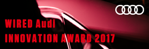
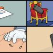

SPECIAL
注目の情報 What's New
-
INSIGHT坂本龍一が「幻のライヴ」についてWIREDに語ったこと
-
SERIES音楽の「聖域」をつくるコミュニティラジオ：連載「佐久間裕美子 ・はじまりの小さな場所」#5
-
SERIES第9回：「神話」は書き継がれ、「憲法」は解釈され続ける──『スター・ウォーズによると世界は』池田純一書評連載
-
SERIES作家性と共生する「システム」を夢見て：ひらのりょう×土居伸彰連載第9回
-
STORYWeWorkの野望──「2兆円企業」が見通す働き方の未来
-
PROMOTIONBEMANIからKAMI-OTOまで通底する哲学：南雲玲生がすくい上げるノイズ
-
SERIES個人データの「コモンズ」は可能か？：「GDPR：データとインターネット〜EUが描く未来」第4回